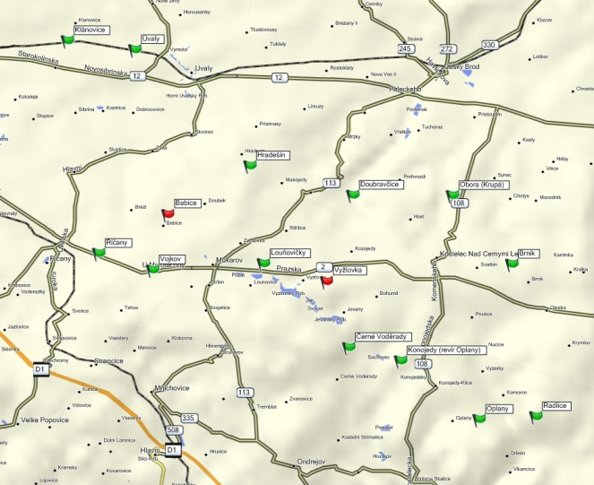
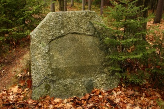
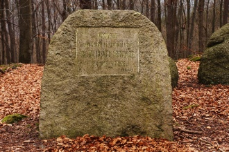
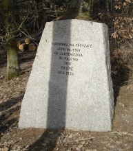
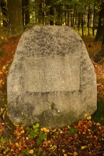
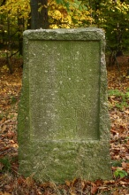
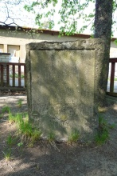

Panství Kostelec nad Černými lesy a Uhříněves
| Historická země: | Čechy |
| Součásti panství Kostelec: | Bohumil, Brník, Chrást, Dobré Pole, Doubravčice, Hošt, Hřiby, Jevany, Komorce, Liblice, Radlice, Skalice, Syneč, Tismice, Tuchoraz, Voděrady, Oplany. |
| Součásti panství Uhříněves: | Uhříněves, Babice, Benice, Běchovice, Břežany, Dubeč, Hodov, Hradešín, Koloděje, Kolovraty, Královice, Křenice, Květnice, Limuzy, Nupaky, Pitkovice, Říčany, Sibřina, Škvorec, Sluštice, Stupice, Tehov, Zdebrady. |
| Původní lesní revíry: | Lesní úřad Nové dvory/Škvorec - revíry: Babice, Hradešín, Nový Dvůr, Říčany, Škvorec, Tehov. Lesní úřad Kostelec n.Č.l. - revíry: Bohumil, Buda, Černé Voděrady, Doubravčice, Kostelec n.Č.l. - část Brník, Kostelec n.Č.l. - část Obora, Oplany, Radlice, Stříbrná Skalice. |
Mapa památníků v oblasti
{kind=link}
Zdokumentované památníky - Lesní úřad Kostelec n.Č.l.
| Brník |  |
| Černé Voděrady |  |
| Doubravčice |

|
| Konojedy |

|
| Krupá |  |
| Louňovice |

|
| Oplany |  |
| Radlice |

|
{kind=link}
{kind=link}
{kind=link}
{kind=link}
Zdokumentované památníky - Lesní úřad Nové dvory/Škvorec
| Hradešín |  |
| Klánovice |  |
| Říčany |

|
| Úvaly |

|
| Vojkov |

|
{kind=link}
{kind=link}
Nedochované památníky
| Babice - památník stával u kraje lesa severně od Babic, v blízkosti červené turistické značky. Jeho osud je neznámý. |
| Vyžlovka - kámen stával u hřiště na Vyžlovce. Byl zničen - použit na stavební materiál. |